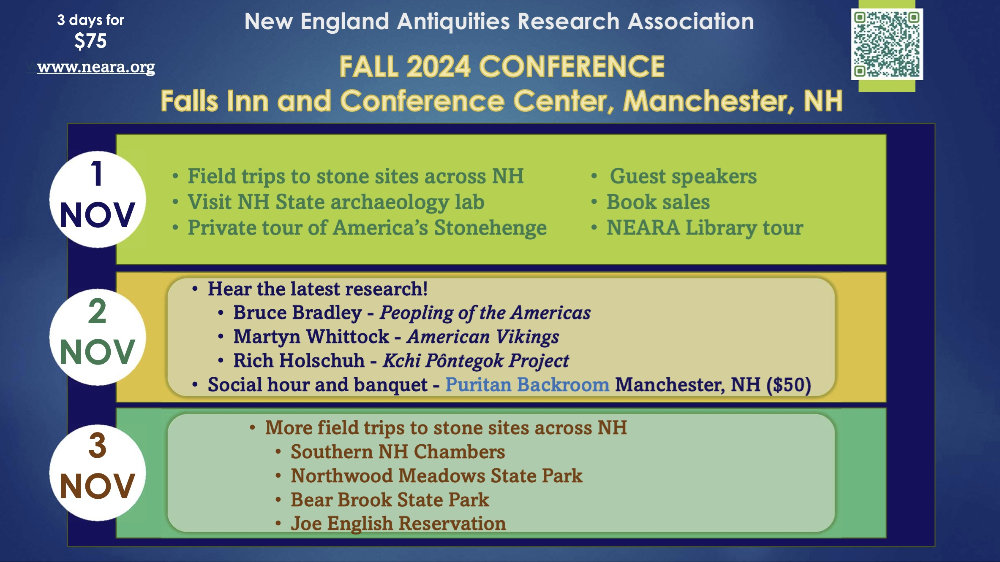

View the program at NEARA 2024 Fall Conference Program.
The Fall 2024 NEARA Conference will be at The Falls Event Center in Manchester, New Hampshire, on the first weekend of November, the 1st to the 3rd, with accommodations are at the adjoining Hampton Inn.
Sign up for the Friday and Saturday conference and the Saturday night banquet at: Conference Registration.
You can choose to:
People who choose only option (1) will be able to see the keynote presentation by arriving at The Puritan Backroom after 7:45 PM. People who are interested in seeing only Bruce Bradley's presentation may choose option (2) and arrive after 5:45 PM.
Please note that signing up for the conference after October 28th, either online or in person, will cost more than early signups. Save money by registering now!
Make a reservation at the Manchester Hampton Inn at 21 Front St. for one of the limited number of rooms reserved for NEARA until October 8. The groups code is CHHNEA, which should already be entered for you from this link. If calling the hotel directly, (603) 669-5400, ask for the “NEARA 2024” rate and room block.
The program will provide updates on NEARA's areas of focus over six decades, including land use in New England, the peopling of the Americas, ongoing research on Viking settlements in North America, and updates on indigenous archaeology and research efforts in the Northeast.
Friday afternoon field trips include:
Sunday's field trips all meet at 9:45 AM at the hotel parking lot.
Note that the Northwood Meadows and Bear Brook field trips are available on both Friday and Sunday, giving you more flexibility in choosing what you want to do.
The Manchester New Hampshire area offers countless dining options. For your convenience, we have assembled a list of restaurants close to the conference center. Please contact the restaurant directly if you have any questions.
110 Grill: (603) 836-1150, 875 Elm Street, Manchester, NH Delivery, pickup, or dine-in. Order by phone and online. New England chain known for allergen-aware dining. Gluten free, vegetarian, and vegan options. Online Menu
The Bookery: (603) 836-6600, 844 Elm Street, Manchester, NH Dine-in only. Downtown bookstore with small café serving coffee, tea, salad, and sandwiches. (No online menu.)
The Bridge Café: (603) 647-9991, 117 Elm Street, Manchester, NH Delivery, pickup, or dine-in. Order by phone only. $10 minimum delivery charge. Breakfast and lunch with gluten free options. Online Menu
Buba Noodle Bar: (603) 935-7864, 36 Lowell Street, Manchester, NH Pickup or dine-in only. Order online or by phone. Gluten free, vegetarian, and vegan options. Online Menu
Campo Enotecha: (603) 625-0256, 969 Elm Street, Manchester, NH Pickup or dine-in. Order by phone and online. Farm-to-table Italian restaurant. Gluten free, vegetarian, and vegan options. Online Menu
The Common Man Roadside: (603) 210-5823, 451 Commercial Street, Manchester, NH Delivery, pickup, or dine-in. Order by phone and online. Gluten free and vegetarian options. Online Menu
The Gyro Spot: (603) 218-3869, 1073 Elm Street, Manchester, NH Online ordering and delivery or dine-in. Lunchtime delivery hours only. Mediterranean menu with gluten free, vegetarian, and vegan options. Online Menu
Hot Stone Pizzeria: (603) 518-1520, 174 Eddy Road, Manchester, NH Delivery, pickup, or dine-in. Order by phone and online. No gluten free or vegan options. Online Menu
KC’s Rib Shack: (603) 6727-7427, 837 2nd Street, Manchester, NH Delivery, pickup, or dine-in. Order by phone and online. Serving barbecue with gluten free options. No vegetarian or vegan options. Online Menu
Market Basket: (603) 626-1070, 460 Elm Street, Manchester, NH Dine-in or takeout. No delivery. Beloved New England grocery store chain with in-store bakery and café. Gluten free and vegetarian options. Online Menu
Mr. Mac’s: (603) 606-1760, 497 Hooksett Road, Manchester NH Delivery, pickup, or dine-in. Serving mac and cheese. Gluten free and vegetarian options. Online Menu
Red Arrow Diner: (603) 626-1118, 61 Lowell Street, Manchester, NH Delivery, pickup, or dine-in. Limited delivery hours. Open 24 hours. Iconic New England diner. Vegetarian options. No gluten free or vegan options. Online Menu
Taj India: (603) 606-2677, 867 Elm Street, Manchester, NH Delivery, pickup, or dine-in. Order by phone and online. Indian restaurant with gluten free, vegetarian, and vegan options. Online Menu
Thai Food Connection: (603) 935-7257, 1069 Elm Street, Manchester, NH Delivery, pickup, or dine-in. Order by phone and online. Gluten free, vegetarian, and vegan options. Online Menu
Venice Old Style Pizza: (603) 935-8814, 610 Front Street, Manchester, NH Delivery, pickup, or dine-in. Order by phone and online. Vegetarian options. No gluten free or vegan options. Online Menu, only available from their home page.
Copyright © 2024 New England Antiquities Research Association. All rights reserved. Some materials are copyright their respective authors. Note that the views expressed here are the opinions of the respective authors and are not the official opinion of NEARA.